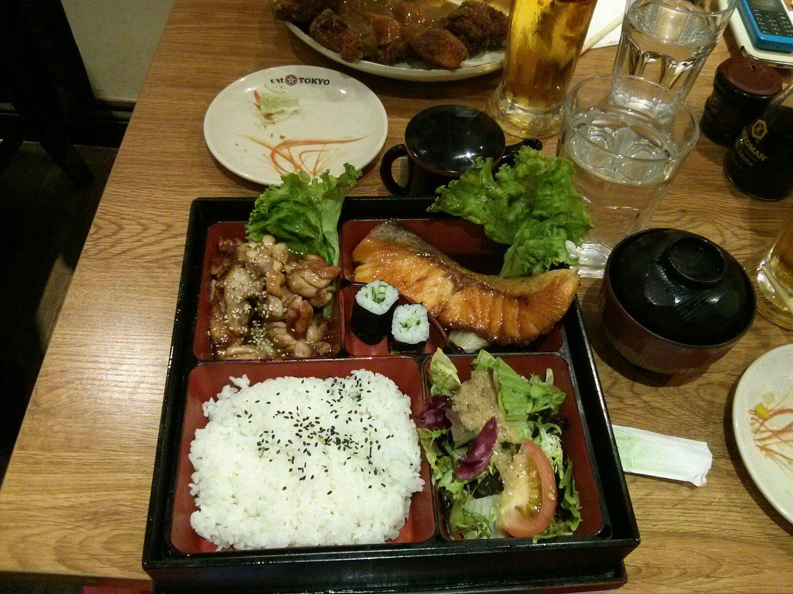
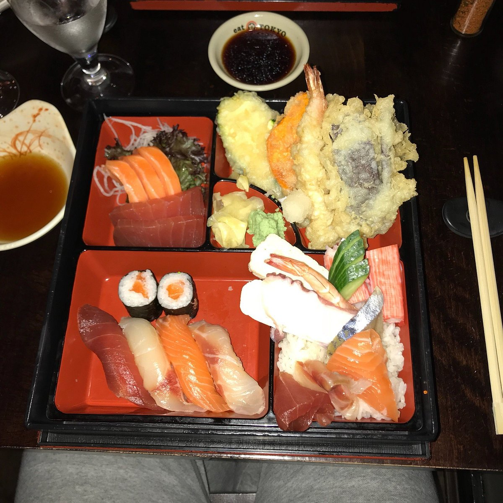
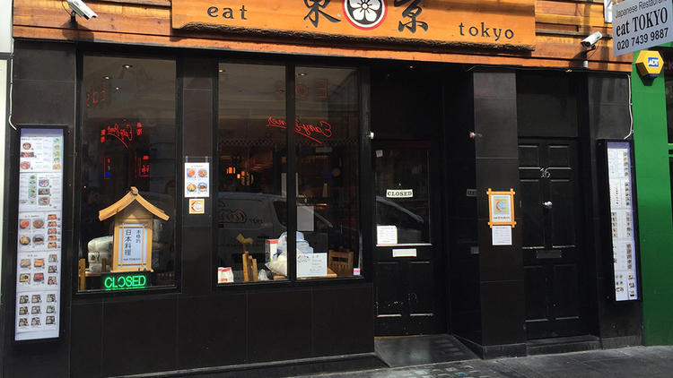

AT EAT TOKYOLONDON Find a table
FROM TOKYO, WITH A WARM WELCOME.
いつもの和食。いつもの場所。
A little Tokyo.
A place to come back to.
Step through the curtain.
Take a seat. Make yourself at home.

一 / FROM OUR KITCHEN
お品書き。
A table full of favourites.
A bento box with a little of everything.
Sushi to share. Something warm for yourself.
There’s always a reason to pull up a chair.

AT EAT TOKYO温かい一品
麺・丼・カレー
Something warm.
Explore noodles, rice bowls and comforting favourites on your local branch menu.
Explore the menu二 / THE LITTLE THINGS
暖簾をくぐれば、
いつもの東京。
London outside. Tokyo at the table.
The cream curtain at the door. A wooden counter, a familiar bowl, the glow of warm lights. A place to settle in, whether it’s a quick lunch or a meal with friends.
Find your neighbourhood kitchen
A FEW FAMILIAR DETAILS
飾らない。
だから、落ち着く。
生成りの暖簾
The familiar welcome.

あたたかな灯り
A golden glow over the counter.
木の格子
A little glimpse from the street.
三 / YOUR NEIGHBOURHOOD
店舗案内。
See you in the neighbourhood.

IN THE HEART OF SOHO
ロンドンの街角で、
「いただきます」。
Find your nearest branch below.
Menus, opening times and booking details
are on each official branch page.